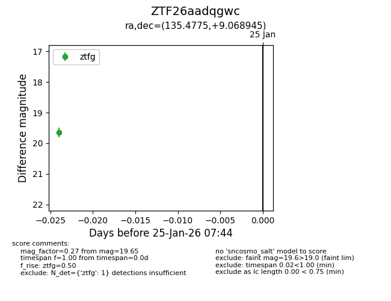
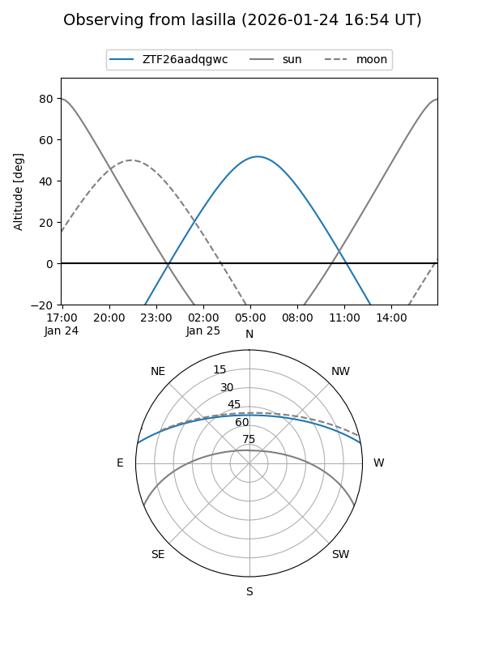
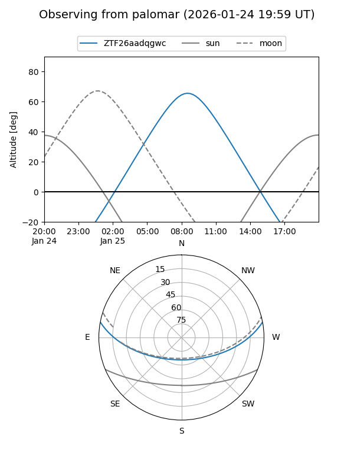

ZTF26aadqgwc
Target ZTF26aadqgwc at 2026-01-25 08:36
Aliases and brokers:
FINK: link
Lasair: link
ALeRCE: link
alt names
ZTF26aadqgwc (ztf,fink_ztf)
Coordinates:
equatorial (ra, dec) = 135.4775,+9.06894
equatorial (HMS+DMS) = 09:01:54.59,+09:04:08.20
galactic (l, b) = (219.9529,+33.06645)
Flags:
Photometry:
last ztfg=19.65, ztfr=19.80
1 ztfg, 1 ztfr detections
Lightcurve

Visibility


Additional plots